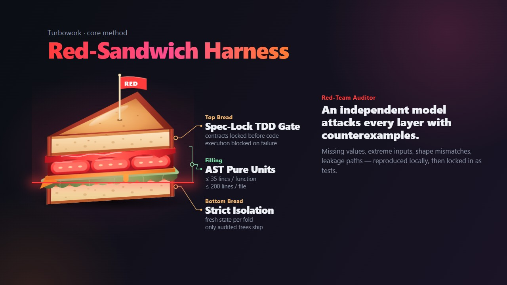
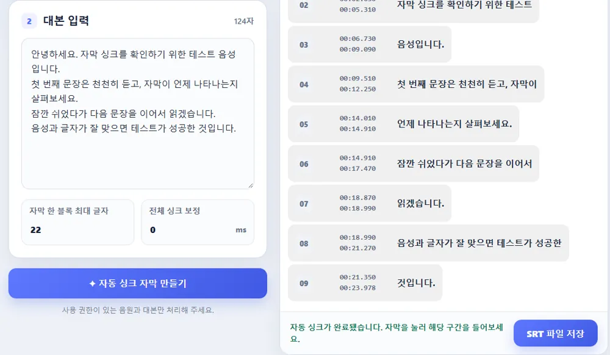
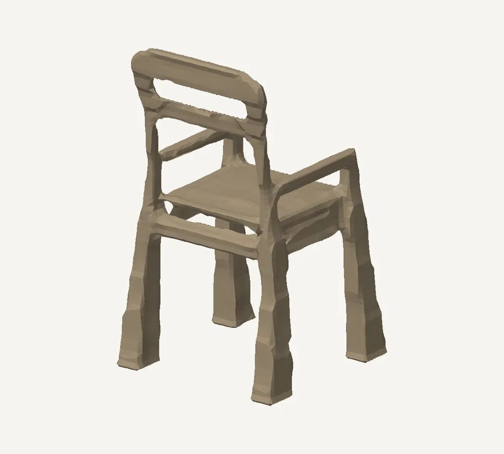
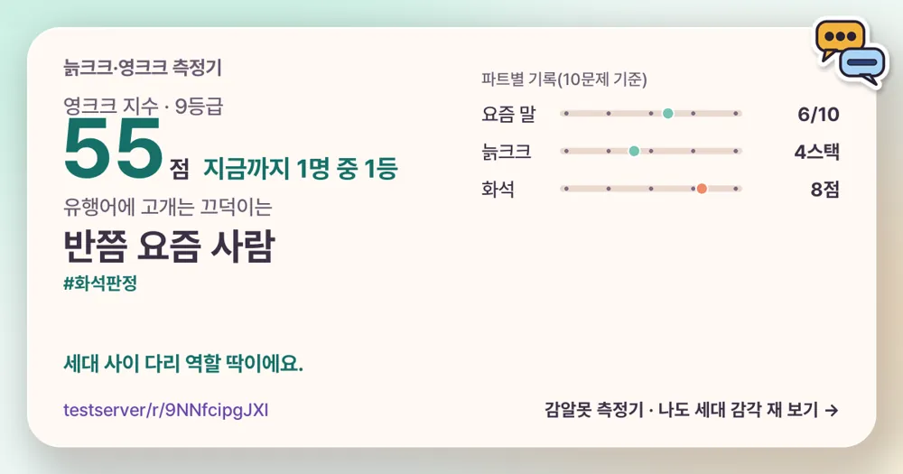

터보워크
 | |
| 정식 상호 | 티제이소프트 (TJ Soft) |
|---|---|
| 영문명 | Turbowork[1] |
| 형태 | 개인사업자 (1인 기업, 외부 투자 없음) |
| 사업자등록번호 | 208-08-97463 |
| 개업일 | 2026년 9월 30일 |
| 대표 | 엄태진 (Taejin Eom) |
| 소재지 | 대한민국 대전광역시 |
| 업종 | AI 소프트웨어 개발, 데스크톱 도구, 웹 서비스, 게임 |
| 핵심 기술 | 레드 샌드위치 하네스 |
| 운영 서비스 | 딜바이트 (생활 계산기) |
| 프로그램 | NVIDIA Inception (2026.11 승인) |
| 장비 | RTX 3060 12GB · i5-12400F · RAM 32GB 1대 |
| 웹사이트 | turbowork.kr |
1.개요
터보워크(Turbowork)는 대전광역시에 있는 대한민국의 1인 AI 소프트웨어 회사다. 정식 상호는 티제이소프트이며 2026년 9월 30일 개업했다. 판매자·크리에이터를 위한 데스크톱 도구, 생활 계산기 웹 서비스 딜바이트, 게임, 영상 채널, 공모전 출품작을 만든다.
가장 큰 특징은 코드를 사람이 아니라 AI 코딩 에이전트가 쓴다는 점이다. 대신 AI가 쓴 코드를 그대로 믿지 않는다. 자체 개발한 레드 샌드위치 하네스가 명세를 먼저 고정하고, 코드 크기와 복잡도를 기계로 제한하고, 다른 회사의 AI(GPT)에게 검수를 맡겨 통과한 것만 커밋한다. 회사 소개 문구도 이 방식을 그대로 담고 있다.
We build AI tools through a pipeline that does not trust the AI.
(우리는 AI를 믿지 않는 파이프라인으로 AI 도구를 만든다.)
2.역사
- SK AI 해커톤(AI Idea League) 일반 부문에 "GMP 환경을 위한 AHU AI 자가진단 솔루션" 출품.
- 티제이소프트 개업.
- Kaggle Name That LLM(상금 5만 달러) 대회 참가. 10월 26일 첫 채점 0.242.
- KIC AI 에이전트 공모전 예선 기획서 제출.
- 레드 샌드위치 하네스 명세를 GitHub에 MIT 라이선스로 공개.
- 하네스 지침 v5.5(370줄). 이후 일주일 만에 v6.4(756줄)까지 커짐.
- Claude Code 기반 v6.6으로 이전. "지침 불가침 원칙" 신설.
- 하네스를 git 저장소로 관리 시작. 하룻밤에 Step 11~20 완료.
- 현대자동차그룹 차량용 앱 공모전에 Pleos Concierge 접수.
- 규칙 원본
rules.md(R01~R101)와 GPT 규약 검수관 도입. - 하네스 v6.6.1→v6.6.7, 하루에 7판. 셀프테스트 112/112 통과.
- NVIDIA Inception 승인. Kaggle 공개 점수 0.695. 회사 도메인 turbowork.kr 개설.
3.레드 샌드위치 하네스
회사의 핵심 기술. 이름은 구조에서 왔다. 위 빵은 결과를 보기 전에 고정하는 명세와 테스트, 속은 작은 단위로 쪼갠 코드, 아래 빵은 엄격한 격리다. 그리고 그 위를 빨간 줄(레드팀 검수관)이 훑고 지나간다. 레드팀은 코드를 쓴 AI와 다른 회사의 AI가 맡는다.
| 단계 | 하는 일 |
|---|---|
| 명세 | Step마다 하위 공정 3개 이상, 입력·출력·검증 기준을 문서로 고정 |
| 구현 | Step마다 새 AI 세션을 띄워 그 Step만 수행 |
| 기계 검사 | 파일 200줄, 함수 35줄, 순환 복잡도 5 이하, 빈 예외 처리 금지 — 어기면 파일 저장 직후 차단 |
| 규약 검수 | GPT가 규칙 위반만 판정 |
| 최종 검수 | 세션이 아니라 실행기가 GPT 최종 검수를 직접 호출. FAIL 1~3회는 자동 재시도, 4회째는 사람 결정 |
| 커밋 | 검수한 것과 똑같은 파일 묶음(git 트리)만 커밋 |
자세한 탄생 과정과 사건 연표는 레드 샌드위치 하네스 문서 참고.
4.일하는 방식
4.1.사전 등록과 정직 표기
실험이나 개선을 할 때 결과를 보기 전에 채택 기준을 파일로 먼저 적어 둔다(사전 등록). 기준에 못 미치면 다른 변형을 계속 시도하지 않고 버린다. 결과가 좋게 나오도록 기준을 나중에 바꾸는 일을 막기 위해서다.
출품작과 판매 페이지에도 한계를 그대로 적는다. 예를 들어 Pleos Concierge 설명란에는 "시연용 빌드이며 실제 AI 모델·음성 인식·주문·결제는 동작하지 않는다"고 적었다. Kaggle 점수도 남의 공개 노트북을 재현한 점수와 직접 만든 모델의 점수를 구분해 공개한다(Kaggle 문서).
4.2.PC 한 대 운영
모든 개발·렌더·검수를 RTX 3060 12GB가 달린 PC 한 대에서 한다. 그래서 장비를 지키는 장치가 하네스에 함께 들어 있다. 메모리 예약 가드(memguard), 디스크 여유 가드(diskguard), CPU 우선순위 자동 하향(cpuguard), 그리고 그리기 작업을 그래픽카드로만 하게 막는 훅(gpu_guard)이다. 모두 실제로 PC가 멈춘 사건 뒤에 생겼다.[2]
5.Kaggle
2026년 10월부터 Name That LLM(글을 보고 18개 AI 모델 중 어느 모델이 썼는지 맞히는 대회, 상금 5만 달러)에 참가 중이다.
| 구분 | 공개 점수 | 비고 |
|---|---|---|
| 첫 채점 | 0.242 | 2026.10.26 |
| 자체 모델 최고 | 0.297 | LightGBM+CatBoost, 5-Fold CV 0.304 |
| 현재 최고 | 0.695 | 2026.11.16, 공개 노트북을 코드 수정 없이 재현한 점수 |
0.651 시점의 순위는 상위 약 12%였다(대표 직접 확인).[3] 직접 개선을 덧붙인 판은 지금까지 모두 점수가 떨어져 쓰지 않았다. 자세한 기록은 터보워크/Kaggle 참고.
6.공모전
| 시기 | 대회 | 출품작 | 상태 |
|---|---|---|---|
| 2026.08 | SK AI 해커톤 (일반 부문) | GMP 환경을 위한 AHU AI 자가진단 솔루션 | 제출 |
| 2026.10.26 | KIC AI 에이전트 공모전 (데이콘) | Global Cross-Check Agent | 예선 기획서 제출 |
| 2026.11.08 | 현대자동차그룹 차량용 앱 개발 공모전 | Pleos Concierge (Android Automotive) | 접수, 심사 대기 |
| 2026.10~ | Kaggle Name That LLM | — | 진행 중 (최고 0.695) |
수상 결과는 발표되는 대로 이 문서에 적는다. 자세한 내용은 터보워크/제품·공모전 참고.
7.제품·서비스







대표 제품만 적는다. 전체 목록(30여 개)은 터보워크/제품·공모전에 있다.
- 딜바이트 — 장보기 단가·할인·날짜·시간 계산기 웹 서비스. 운영 중.
- 터보워크 보컬 스튜디오 — 캐릭터 목소리·내레이션에서 자막·싱크·마스터링 영상까지 만드는 데스크톱 앱.
- 싱크자막 메이커 — 음원과 대본만으로 AI 없이 자막 타이밍(SRT)을 맞추는 앱.
- CutCatch — Windows 화면 녹화·캡처, 강의 녹화 모드.
- QuickPrompt CS — 단축키 한 번으로 고객 응대 문구를 입력란에 넣는 도구.
- Blender AI 3D 에셋 생성기 — 글·이미지로 3D 모델(GLB)을 만드는 Blender 애드온.
- 제어센터 — PC·서버·개발 파이프라인을 감시하는 트레이 앱 (테스트 760개 통과).
8.기술 스택
| 분야 | 쓰는 것 |
|---|---|
| AI 개발 | Claude Code(구현), OpenAI GPT(규약·최종 검수), Codex |
| 언어 | Python, TypeScript, Rust, Kotlin, C#, PowerShell |
| 데스크톱 | Tauri 2 + React, PySide6/PyQt6 |
| 웹 | 정적 사이트, 서버리스 워커, GitHub Pages, FastAPI |
| 그래픽·영상 | Blender, three.js, Remotion, ffmpeg |
| 머신러닝 | PyTorch, LightGBM, CatBoost, LoRA 미세조정, Kaggle GPU |
| 모바일·차량 | Android, Android Automotive OS |
| 게임 | Unity, three.js + cannon-es |
9.클라우드·지원 프로그램
| 프로그램 | 상태 (2026.11.16) |
|---|---|
| NVIDIA Inception | 승인 (2026.11.16) |
| Microsoft for Startups (Azure) | 1단계 크레딧 받음, 다음 단계 심사 중 |
| AWS Activate | 심사 중 |
| Lambda | 심사 중 |
크레딧은 PC 한 대로 막혀 있던 일, 즉 긴 영상 렌더·3D 에셋 생성·검수 자동화에 쓸 계획이다. 결과물은 사내 기록 서버에 남긴다.
10.평가와 한계
- 제품 수에 비해 매출 실적은 아직 없다. 크몽에 판매 페이지 4개를 열었지만 2026년 10월 말 기준 거래는 0건이다.
- Kaggle 최고 점수는 공개 노트북 재현이며, 자체 개선으로 그 점수를 넘지는 못했다.
- 공모전 수상 이력은 아직 없다(심사 대기 포함).
- 개발 속도는 빠르다. 하네스 자체를 한 달 안에 v5.5에서 v6.6.7까지 고쳤고, 하네스로 끝낸 프로젝트 중에는 테스트 1,000개 이상이 통과한 것도 있다.
11.관련 문서
- 레드 샌드위치 하네스 — 탄생기와 사건 연표
- 터보워크/Kaggle — 점수 이력과 연구 방식
- 터보워크/제품·공모전
- 대표 이력서 (English)
- GitHub: red-sandwich-harness
- LinkedIn: 엄태진
- 국세청 영문 사업자등록증명에 기재된 영문 상호. 정식 한글 상호는 바꾸지 않았다.
- 2026.11.07 로그 파일이 232.6GB까지 커져 D 드라이브가 가득 참, 11.12 11GB 모델이 다른 작업과 겹쳐 PC가 멈춤, 11.15 CPU 100%로 강제 종료 2회.
- Kaggle 화면에서 대표가 직접 확인한 값이며, 공식 API로 다시 조회한 값은 아니다.